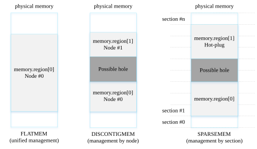
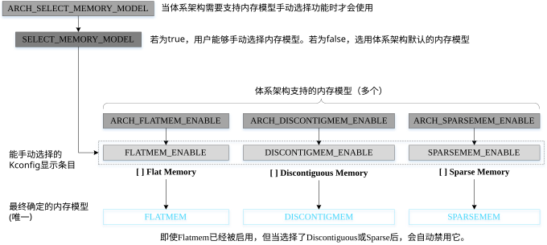
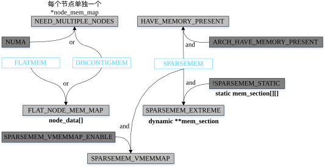
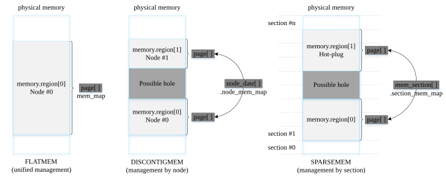
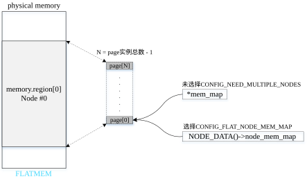
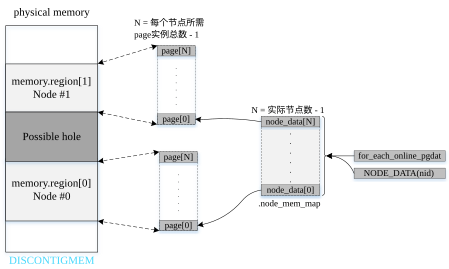
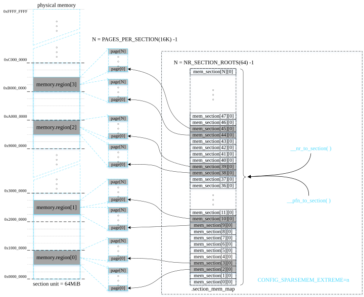
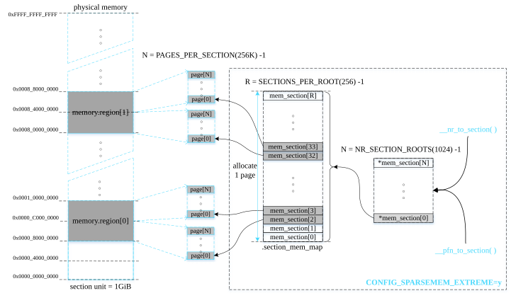

不同Linux内存模型以不同方式管理和组织可用物理内存，具体方式取决于系统物理内存是否不连续且存在空隙。本文讨论Linux支持的三种内存模型以及如何管理每种内存模型的内存映射「memory map」，比如FLATMEM模型的mem_map。
- Target Platform: Rock960c
- ARCH:arm64
- Linux Kernel:linux-4.19.27
内存模型种类
三种内存模型
Linux目前支持三种内存模型：FLATMEM、DISCONTIGMEM和SPARSEMEM。某些体系架构支持多种内存模型，但在内核编译构建时只能选择使用一种内存模型。

图1 支持的内存模型
内存模型特点
下面分别讨论每种内存模型的特点：
- FLATMEM
- 内存连续且不存在空隙
- 在大多数情况下，应用于UMA系统「Uniform Memory Access」
- DISCONTIGMEM
- 多个内存节点不连续并且存在空隙「hole」
- 适用于UMA系统和NUMA系统「Non-Uniform Memory Access」
- ARM在2010年已移除了对DISCONTIGMEM内存模型的支持
- SPARSEMEM
- 多个内存区域不连续并且存在空隙
- 支持内存热插拔「hot-plug memory」，但性能稍逊色于DISCONTIGMEM
- 在x86或ARM64内核采用了最近实现的SPARSEMEM_VMEMMAP变种，其性能比DISCONTIGMEM更优并且与FLATMEM相当
- 对于ARM64内核，默认选择SPARSEMEM内存模型
- 以section为单位管理online和hot-plug内存
section大小从几十MiB到几GiB不等，取决于体系架构和内核的配置。通常在系统配置中将内存扩展单元「memory expansion unit」用作section大小。比如，如果系统内存可扩展至64GiB，并且最小内存扩展单元为1GiB，则设置section大小也为1GiB。当使用Linux系统作为hypervisor的客户操作系统「guest OS」，也是以section大小为单元在运行时向Linux系统增添内存和移除Linux系统的内存。
选择内存模型的配置选项
如果在一个体系架构中有多种内存模型可用（ARM64只支持一种内存模型），通过可选的内核配置选项来决定使用哪种内存模型。首先，打开ARCH_SELECT_MEMORY_MODEL和SELECT_MEMORY_MODEL内核配置选项以允许用户能够手动选择内存模型。此后，每种内存模型要求的内核配置选项如图2所示。

图2 确定内存模型的内核配置选项
更多关于内存模型的配置选项
一旦已确定使用的内存模型，还可以设置与内存模型相关的其他配置选项。每种内存模型牵涉的具体配置选项如图3所示。

图3 与内存模型相关的具体配置选项
内存模型涉及的配置选项如下表所示。
内存映射「memory map」
内存映射「mem_map」是一个页帧描述符「page frame descriptor」数组，其管理顺序排列的页帧。页帧描述符包括页帧的属性和管理数据。在Linux内核，用struct page表示页帧描述符。涉及内存映射的主要内容如下：
- 页用途管理 「page usage management」
- 伙伴内存分配器「buddy memory allocator」
- slab内存分配器「slab memory allocator」
- 页统计信息「page count information」
管理内存映射的方式取决于选用的内存模型。
- FLATMEM: 用全局指针变量*mem_map管理单个连续内存，其指向struct page类型数组的首地址。
- DISCONTIGMEM: 用全局数组node_data[]管理所有节点的内存，CONFIG_NODES_SHIFT配置选项决定数组的容量，数组元素数量应尽可能与内存节点个数一样。数组每个元素是指向pglist_data实例的指针，一个pglist_data实例管理一个节点的内存。struct pglist_data的node_mem_map字段指向struct page类型数组的首地址，用于管理节点的所有物理页帧。
- SPARSEMEM: 用全局数组mem_section[]管理分散稀疏的内存，数组大小等于在编译时体系架构可用物理地址空间的大小(可由配置选项设置)除以section大小。数组每个元素是指向mem_section实例的指针，如果一个section存在物理内存，则用一个mem_section实例进行管理（注意：数组名称mem_section[]和结构体名称struct mem_section相同）。struct mem_section的section_mem_map字段指向struct page类型数组的首地址，用于管理section的所有物理页帧。
如图4所示显示了不同内存模型的内存映射方法。

图4 对三种内存模型的内存映射进行对比
接下来仔细分析一下每种内存模型的内存映射。
平坦内存模型「flat memory model」的内存映射管理
在平坦内存模型中，毗邻连续地排列所有页帧描述符。全局指针变量mem_map指向首个页帧描述符。同时结构体变量contig_page_data的node_mem_map成员也指向第一个页帧描述符。

图5 FLATMEM的内存映射管理
不连续内存模型「discontiguous memory model」的内存映射管理
非连续内存模型由多个内存节点组成，每个节点的页帧数决定了页帧描述符的数量。通过node_data数组获取指定节点的实例，然后使用节点实例的node_mem_map成员来管理每个节点的页帧描述符。

图6 DISCONTIGMEM的内存映射管理
稀疏内存模型「sparse memory model」的内存映射管理
稀疏内存模型以固定大小的单元统一管理分散的内存，易于内存管理。这个固定大小的单元被称为内存段「section」。通过这种方式划分整个物理地址空间以及当前存在的内存。结构体struct mem_section管理一个section，并通过section_mem_map成员指向一个页帧描述符数组（page数组），数组元素数量为PAGES_PER_SECTION。在稀疏内存模型中，section是最小的单元，其大小从几十MB到几GB不等，用于管理online/offline（热插拔）内存。目前存在两种方法用于管理不同数量的section。
- CONFIG_SPARSEMEM_STATIC：大多数32位系统和section数量不多的情况会利用这种方法管理内存。在编译时就能确定section数量。
- CONFIG_SPARSEMEM_EXTREME（ARM64默认启用）：大多数64位系统和section数量较多的情况会利用这种方法管理内存。如果内存中存在较大的空隙，使用两级section管理数组能够减少内存的浪费。在初始化时创建第一级管理数组（一个指针数组mem_section[ ]），只有在必要的情况下才创建第二级管理数组（mem_section实例数组）。
图7所示显示了一个启用了CONFIG_SPARSEMEM_STATIC配置选项的例子。

图7 SPARSEMEM的内存映射管理（CONFIG_SPARSEMEM_STATIC）
图8所示显示了一个启用了CONFIG_SPARSEMEM_EXTREME配置选项的例子。

图8 SPARSEMEM的内存映射管理（CONFIG_SPARSEMEM_EXTREME）
页帧描述符扩展(page_ext)「page frame descriptor extension」
内存调试需要使用page_ext，把它从页帧描述符中分离出来是为了防止struct page变大。当开启了内存调试，并且在内核命令行指定相关的参数，比如debug_guardpage_minorder、debug_pagealloc和page_owner等内核参数，page_ext实例在启动或内存热插拔时被分配创建。在内存调试完成后，如果删除了所有相关内核命令行参数，那么在重启内核时，将不会再生成page_ext实例。